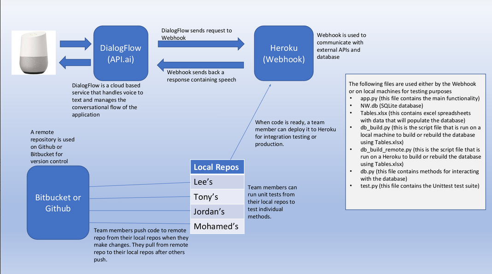
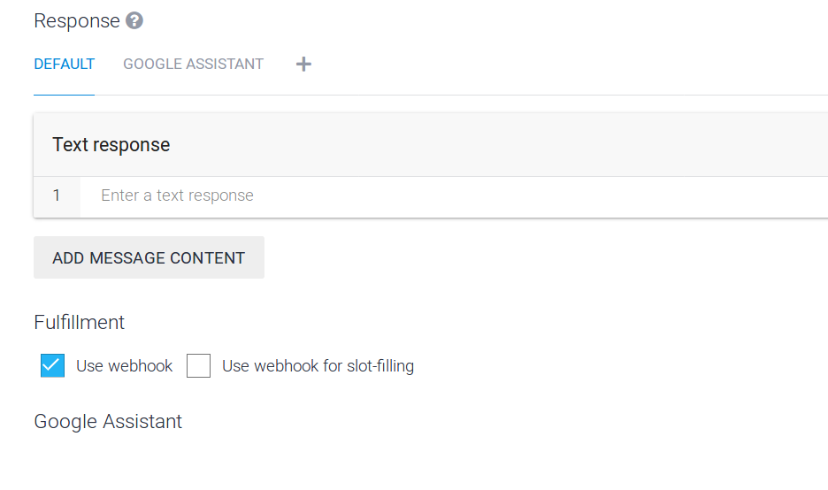
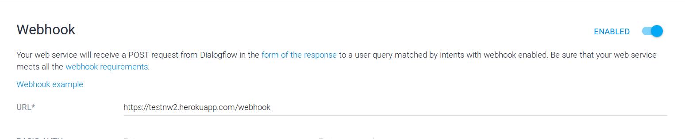
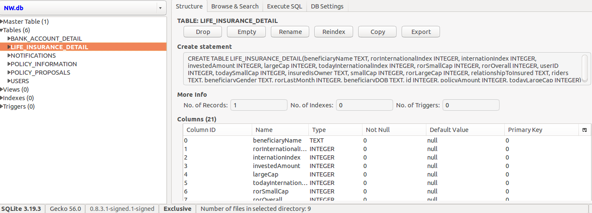
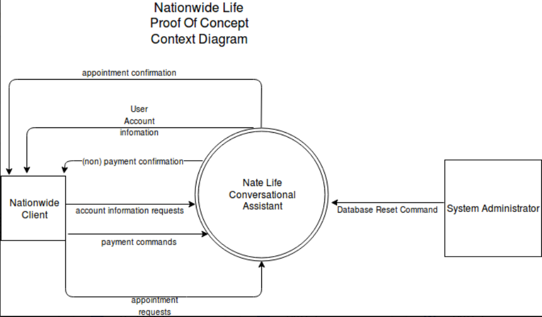
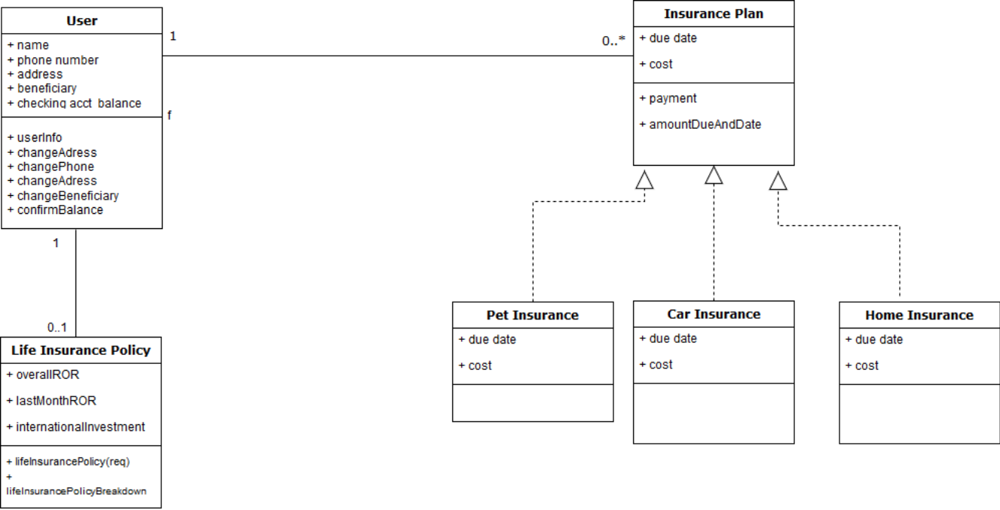
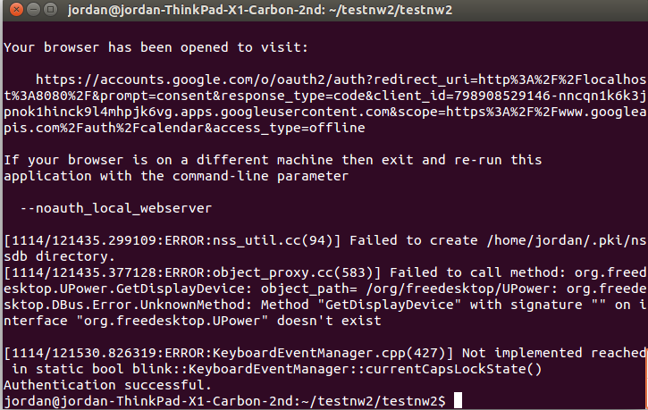
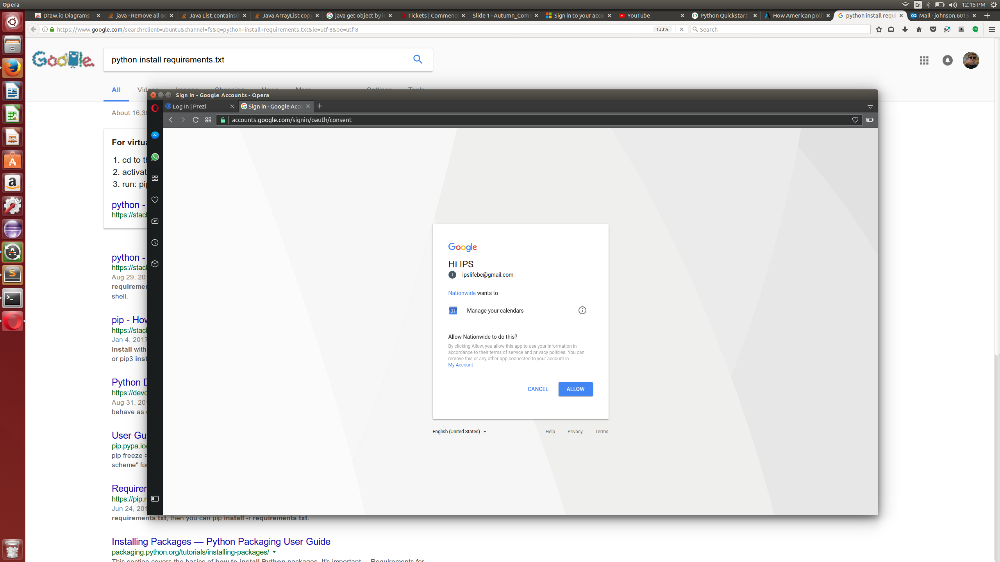
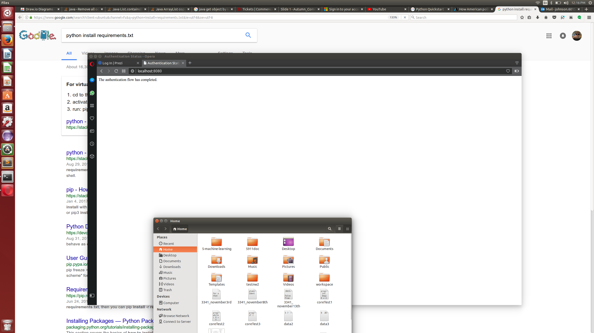

Introduction
Welcome to the working documentation for the Nationwide Conversational Assistant "Nationwide Life". The following sections describe the collective functionality of the application. This includes its technology stack, architecture, methods, and datebase structure, and any other additional notes we found important to pass on to the next team of developers.
Notable Project Files
app.py
The majority of the logic (code) for the project. Methods for app.py are listed in the App.py Methods section.
db.py
Where all database queries are run. These queries are within the functions. Each of these functions either returns some piece of data or updates the database. They are then used in app.py methods.
db_build.py
Constructs the Sqlite3 database. Reads from the excel file Tables.xlsx, which consists of the db tables in excel form, to perform the build. This allows for easy editing of tables and attributes. This file is ran locally
db_build_remote.py
Same as db_build.py except ran from Google Home during the reset database intent.
NW.DB
The raw database file. Can be viewed with Firefox sqlite plugin (available for verions 42 and above) or any other sqlite3 management application.
Procfile
The mechanism for declaring what commands are run by your application’s dynos on the Heroku platform.
For the purposes of this project, Heroku will only need to execute the command python.app.py through web.
Read more here
requirements.txt
A list of dependencies for the project. Run pip install -r requirements.txt to automatically install
these dependencies.
setup.py
In the command line, in the same directory as your setup folder, run python setup.py to properly install xlrd, the Excel reader for database builds.
Tables.xlsx
The Excel file representation of the database. Xlrd reads from this file in db_build.py to build the database, creating NW.db
Test.py
The python file where automated unit tests are ran.
Architecture and System Components
Architecture Logical View

Architecture Physical View

General
The architecture for Google Home applications is different than conventional software solutions, but straightforward.
Above is a sequence diagram of the process. When the user speaks a command, called an intent, into the device, it gets processed by a speech engine called "Dialogflow".
Dialogflow is linked with Google Actions. (You may see this linkage by going to dialogflow.com and clicking on "Integrations"). There are a list of intents, all containing trigger phrases. A given action or response is then initiated by Dialogflow after it processes a given trigger phrase. You can add to what Dialogflow recognizes by creating a new intent, or adding a new phrase to an existing intent.
After the intent is spoken, its associated JSON will be passed to the webhook. To ensure the webhook is being used for a given intent, check "use webhook" and save.

The webhook handles all programming logic in the application. Within the webhook, there exists a method for nmny of the intents in Dialogflow.
Dialogflow
You can log into Dialogflow.com with the email ipslifebc@gmail.com and the password of nationwidelife
As mentioned, Dialogflow is a speech processing engine, essentially required to develop Google Assistant apps easily. Components of Dialogflow we found important to this project are intents, entities, actions and parameters, and contexts.
The webhook and Heroku
Navigate to the Fulfillment tab of Dialogflow to view or edit the webhook URL. 
The webhook is the center of logic for the project. We could always hardcode static responses to user commands all wthin Dialogflow. But Wwen a user speaks an intent, we want variable responses depending on who the user is. This is where the webhook comes in.
The webhook is currently hosted on Heroku. It contains a list of functions and methods that correspond to user intents, as well as database calls to aid these functions. These can be seen in app.py and db.py respectively. app.py methods are described herein.
How Dialogflow and the Webhook communicate
Sqlite3 and the Database
The database sits on Heroku along with the rest of the application. NW.db is the primary database file. The database is created by running python db_build.py in a terminal. The database can be edited by opening Tables.xlsx found in the project directory. This file provides an Excel representation of the database which allows for easy editing.
Databases tables include:
BANK_ACCOUNT_DETAIL
NOTIFICATIONS
POLICY_INFORMATION
POLICY_PROPOSALS
USERS

Agile Artifacts
Context Diagram

UML Diagram

Setup and Configuration
Clone the Project from Github onto your local directory
Open a terminal and navigate to the working directory of the project. (The place with app.py, db.py, etc)
Run the command 'Pip install -r requirements.txt'. This will install the project dependencies to your local machine
To configure for authentication for Google Calendar Integration (OPTIONAL)
- Open the file App.py
- Navigate to the function, if name == 'main':
- comment in the line ObtainThyCredentials
- comment out the line app.run(port=port, host='0.0.0.0', debug = True)
- naviate to the function ObtainThyCredentials()
- comment in the line credentials = tools.run_flow(flow, store)
- run Python app.py in the terminal. If a browser window does not open automatically open running, click the browser link in the terminal

* at this point, log into the browser window with the account you want linked with Google Calendar 
* on successful login you will see the followup window: 
* Events will now post directly to your Google calendar after the schedule appointment intent. There is no need to do these steps again, unless when dealing with a different account. 4. Comment back out ObtainThyCredentials() in f name == 'main':. Comment back in the line app.run(port=port, host='0.0.0.0', debug = True). Navigate to the function ObtainThyCredentials() and comment back out the line credentials = tools.run_flow(flow, store). (essentially, undo everything)
- Now that Google Calendar Authentication is configured, you will be good to go. We ran the project from either Dialogflow.com, or from the Google Actions Console when testing. The project can also be run anytime from the Google Assistant on your phone by saying "Talk to Nate Life", or from a Google Home using that same invoking command.
App.py Methods
Methods related to the app's immediate functional requirements are located in app.py. These methods are as follows:
webhook
from flask import Flask
from flask import request, redirect, session, url_for, make_response, render_template
@app.route('/webhook', methods=['POST'])
def webhook():
req = request.get_json(silent=True, force=True)
print(json.dumps(req, indent=4))
res = processRequest(req)
res = json.dumps(res, indent=4)
r = make_response(res)
r.headers['Content-Type'] = 'application/json'
return r
This endpoint gets and parses the JSON generated from Dialogflow after an action is triggered.
HTTP Request
POST http:/testnw2.herokuapp.com/webhook
Query Parameters
| Parameter | Default | Description |
|---|---|---|
| include_cats | false | If set to true, the result will also include cats. |
| available | true | If set to false, the result will include kittens that have already been adopted. |
processRequest
This endpoint processes the JSON request that we received from Dialogflow. In that JSON request exists a specific action that corresponds to what intent was triggered in Dialogflow. We map said action to a specific function within our webhook.
Parameters
| Parameter | Description |
|---|---|
| req | The request JSON received from Dialogflow to be processed |
obtainThyCredentials
event = service.events().insert(calendarId='primary', body=event).execute()
Grants access to the Google Calendar API by storing an access token within the project directory. If no access token is found, it will run an authentication flow in order to obtain said token. See Google API Client Secrets Flow for more information. For the purposes of the demo, in order to obtain the access token for a given you, run the script under "shell" to the right in a command line. A browser window will appear for you to authenticate.
scheduleEvent
Maps to action "Appointment" in Dialogflow. Authenticates user. Schedules event on user's Google Calendar given
parameters date and time. Returns a return speech back to the users.
Parameters
| Parameter | Description |
|---|---|
| req | The request JSON. We obtain parameters date and time from the request. |
userInfo
Outputs the user's information: name, address, phone number, and beneficiary. Using the request req JSON,
we obtain the user's ID. Then we query the database using this ID to return the user's information.
Parameters
| Parameter | Description |
|---|---|
| req | The request JSON. We obtain parameters userID from the request. |
changeAddress
Updates the user's address. Using the request req JSON,
we obtain the user's ID. Then we query the database using this ID to update a user's address.
Parameters
| Parameter | Description |
|---|---|
| req | The request JSON. We obtain parameters userID from the request. |
changePhone
Updates the user's phone number. Using the request req JSON,
we obtain the user's ID. Then we query the database using this ID to update a user's phone number.
Parameters
| Parameter | Description |
|---|---|
| req | The request JSON. We obtain parameters userID from the request. |
changeBeneficiary
Updates the user's beneficiary. Using the request req JSON,
we obtain the user's ID. Then we query the database using this ID to update a user's beneficiary.
Parameters
| Parameter | Description |
|---|---|
| req | The request JSON. We obtain parameters userID from the request. |
changeChecking
Updates the user's checking account information. Using the request req JSON,
we obtain the user's ID. Then we query the database using this ID to update a user's checking account information.
Parameters
| Parameter | Description |
|---|---|
| req | The request JSON. We obtain parameters userID from the request. |
totalPremiumAndDueDate
Retrieve the user's total amount due across all bills, and their due dates.
Using the request req JSON,
we obtain the user's ID. Then we query the database using this ID to obtain the user's premium information.
Parameters
| Parameter | Description |
|---|---|
| req | The request JSON. We obtain parameters userID from the request. |
confirmBalance
def confirmBalance(req):
parameters = req.get("result").get("parameters")
userID = int(parameters.get("userID"))
balance = getCheckingAccountBalance(userID)
prems_and_dates = getAmountDueAndDuedates(userID)
total = 0
for i in range(0, len(prems_and_dates)):
total += prems_and_dates[i][1]
if balance >= total:
speech = "Yes, your checking account balance is "+ str(balance)+ " and it is enough to pay your premium."
speech += "would you like to go ahead with the payment?"
else:
speech = "No, your checking account balance is "+ str(balance)+ " and it is not enough to pay your premium."
return {
"speech": speech,
"displayText": speech,
# "data": data,
# "contextOut": [],
"source": "Nationwide-financial-assistant"
}
Retrieve a user's balance. Used to determine if they have enough funds in account to pay off a given premium
Using the request req JSON,
we obtain the user's ID. Then we query the database using this ID to obtain the user's balance
Parameters
| Parameter | Description |
|---|---|
| req | The request JSON. We obtain parameters userID from the request. |
amountAndDueDate
def amountDueAndDueDate(req):
parameters = req.get("result").get("parameters")
userID = int(parameters.get("userID"))
prems_and_dates = getAmountDueAndDuedates(userID)
count = 0
speech1 = ""
for i in range(0,len(prems_and_dates)):
insurance_type = prems_and_dates[i][0]
if prems_and_dates[i][1] > 0:
speech1 += " Your " + insurance_type.replace("_", " ") + " payment due is " + \
str(prems_and_dates[i][1]) + " dollars."
date = prems_and_dates[i][2]
count += 1
speech = "You have " + str(count) + " payments due."
speech += speech1
if count >= 0:
speech += " Your due date is " + date + ". Do you want to check your account balance or make a payment?"
return {
"speech": speech,
"displayText": speech,
# "data": data,
# "contextOut": [],
"source": "Nationwide-financial-assistant"
}
Retrieve a user's amount due and due date for a given insurance type or payment plan.
Using the request req JSON,
we obtain the user's ID. Then we query the database using this ID to obtain the user's balance
Parameters
| Parameter | Description |
|---|---|
| req | The request JSON. We obtain parameters userID from the request. |
payment
def payment(req):
parameters = req.get("result").get("parameters")
userID = int(parameters.get("userID"))
insurance_type = str(parameters.get("insurance_type"))
change = False
if insurance_type == "all_insurance":
speech = "OK, I have made the "
prems_and_dates = getAmountDueAndDuedates(userID)
for i in range(0, len(prems_and_dates)):
result, remain, due = payPremium(userID, prems_and_dates[i][0])
if result:
change = True
if i == len(prems_and_dates) - 1 and i != 0:
if len(prems_and_dates) == 2:
speech = speech[:len(speech) - 2] + " "
speech += "and "
speech += prems_and_dates[i][0].replace("_", " ") + ", "
if change:
speech = speech[:len(speech) - 2]
speech += " payment for you. Your checking account has " + \
str(remain) + " dollars left."
else:
result, remain, due = payPremium(userID, insurance_type)
if result:
speech = "OK, I have made the " + \
insurance_type.replace("_", " ") + \
" payment for you. Your checking account has " + \
str(remain) + " dollars left."
elif due != 0:
speech = "Sorry, I can't make the payment for you because " + \
"you don't have enough credit in your checking account."
else:
speech = "You have already made the payment."
speech += " Is there anything else I can help you with?"
return {
"speech": speech,
"displayText": speech,
# "data": data,
# "contextOut": [],
"source": "Nationwide-financial-assistant"
}
Pays either one type of insurance plan, or all plans the user is enrolled in, provided whatever the user voices. If payment is successful, updates database with new values for the checking account after a given payment is made. If the user does not have the necessary amount in their checking account, the payment will not be made, and the method will return a notice message. If a certain payment has already been made, the method will alert the user that they have already made that payment.
Parameters
| Parameter | Description |
|---|---|
| req | The request JSON. We obtain parameters userID and insurance_type from the request. |
lifeInsurancePolicy
def lifeInsurancePolicy(req):
parameters = req.get("result").get("parameters")
userID = int(parameters.get("userID"))
overallROR = getOverallReturnRate(userID)
lastMonthROR = getLastMonthReturnRate(userID)
internationInvestment = getInternationInvestment(userID)
internationalROR = getInternationalROR(userID)
rorDifference = lastMonthROR - overallROR
if rorDifference < 0:
#speech = "Your return rate has decreased by " + str(rorDifference) + " percent over the past month relative to your overall rate of return. You have invested " + str(internationInvestment) + " dollars in international markets, this having a rate of return of " + str(internationalROR) + " percent."
speech = "The cash value of your policy has been decreasing in value. Would you like to hear more information?"
else:
#speech = "Your return rate has increased by " + str(rorDifference) + " percent over the past month relative to your overall rate of return. You have invested " + str(internationInvestment) + " dollars in international markets, this having a rate of return of " + str(internationalROR) + " percent."
speech = "The cash value of your policy has increased in value. Would you like to hear more information?"
return {
"speech": speech,
"displayText": speech,
# "data": data,
# "contextOut": [],
"source": "Nationwide-financial-assistant"
}
Performs a basic calculation to determine if a user's policy has decreased or increased in value over time. If the rate of return for the last rolling month is less than the user's overall rate of return, we say that the user's rate of return has decreased. Otherwise, it has increased.
Parameters
| Parameter | Description |
|---|---|
| req | The request JSON. We obtain parameters userID from the request. |
lifeInsurancePolicyBreakdown
def lifeInsurancePolicyBreakdown(req):
parameters = req.get("result").get("parameters")
userID = int(parameters.get("userID"))
overallROR = getOverallReturnRate(userID)
lastMonthROR = getLastMonthReturnRate(userID)
internationInvestment = getInternationInvestment(userID)
internationalROR = getInternationalROR(userID)
rorDifference = lastMonthROR - overallROR
print(rorDifference)
if rorDifference < 0:
speech = "Your return rate has decreased by " + str(rorDifference) + " percent over the past month relative to your overall rate of return. You have invested " + str(internationInvestment) + " dollars in international markets, the rate of return of these funds has fallen " + str(internationalROR) + " percent."
else:
speech = "Your return rate has increased by " + str(rorDifference) + " percent over the past month relative to your overall rate of return. You have invested " + str(internationInvestment) + " dollars in international markets, this having a rate of return of " + str(internationalROR) + " percent."
speech = speech.replace('-', "")
speech += " Would you like to set up an appointment with an agent?"
return {
"speech": speech,
"displayText": speech,
# "data": data,
# "contextOut": [],
"source": "Nationwide-financial-assistant"
}
idea maybe show how each method relates to speeech.
The method lifeInsurancePolicy will ask the user if they want to hear more information regarding life insurance. If they agree, this method is called. Uses db.py methods getOverallReturnRate(userID) getLastMonthReturnRate(userID)
getInternationInvestment(userID) and getInternationalROR(userID) to retrieve the overall rate of return, last month's rate of return, international investments, and international rate of return respectively and provide this data to the user.
Parameters
| Parameter | Description |
|---|---|
| req | The request JSON. We obtain parameters userID from the request. |
notifications
def notifications(req):
parameters = req.get("result").get("parameters")
userID = int(parameters.get("userID"))
notifications = getNotifications(userID)
print(notifications)
numOfNotifs = getNumberOfNotifications(userID)
speech = "Looks like you have " + str(numOfNotifs) + " notifications. "
for i in range (0, numOfNotifs):
speech += "Number " + str(i+1) + ": "
speech += str(notifications[i]) + " "
deleteThese = "()\'\""
for char in deleteThese:
speech = speech.replace(char, "")
speech = speech.replace(",", ".")
speech += "would you like to review your payment due?"
#print(speech)
return {
"speech": speech,
"displayText": speech,
# "data": data,
# "contextOut": [],
"source": "Nationwide-financial-assistant"
}
Retrives user notifications from the database.
Parameters
| Parameter | Description |
|---|---|
| req | The request JSON. We obtain parameters userID from the request. |
verifyPinFufillRequest
def verifyPinFufillRequest(req):
parameters = req.get("result").get("parameters")
userID = int(parameters.get("userID"))
pin = (parameters.get("mypin"))
pin = str(pin)
#hash the pin
pin.encode('utf-8')
encryptedPin = hashlib.sha512(pin.encode('utf-8')).hexdigest()
encryptedPin = str(encryptedPin)
#compare hashed pin to pin from database (use query)
databasePin = getHashedUserPin(userID)
databasePin = str(databasePin)
if databasePin == encryptedPin:
#print("TRUE")
speech = "Okay. Acquiring your secrets. One moment"
else:
speech = "Incorrect Pin. Returning to main menu."
return{
"speech": speech,
"displayText": speech,
"source": "Nationwide-financial-assistant"
}
As a concept, if the user is going to access something otherwise confidential, they would speak or type a pin into their assistant.
We get the pin number the user gave the assistant through the mypin parameter in the JSON. We hash this pin
using the same hash used for the database pin, and compare the incoming pin versus the db pin. If they are equal, we carry out user's request.
Parameters
| Parameter | Description |
|---|---|
| req | The request JSON. We obtain parameters userID and mypin from the request. |
dbReset
def dbReset(req):
os.system('python db_build_remote.py')
speech = "The database has been reset!"
return {
"speech": speech,
"displayText": speech,
# "data": data,
# "contextOut": [],
"source": "Nationwide-financial-assistant"
}
This is a special function created for demo purposes to reset database.
initialize
def initialize(req):
os.system('python db_build_remote.py')
speech = "Hello! I have some important updates regarding your Nationwide accounts. Would you like to hear it?"
return {
"speech": speech,
"displayText": speech,
# "data": data,
# "contextOut": [],
"source": "Nationwide-financial-assistant"
}
(Re)Initializes the database and assistant after the reset.
Errors
The Kittn API uses the following error codes:
| Error Code | Meaning |
|---|---|
| 400 | Bad Request -- Your request sucks. |
| 401 | Unauthorized -- Your API key is wrong. |
| 403 | Forbidden -- The kitten requested is hidden for administrators only. |
| 404 | Not Found -- The specified kitten could not be found. |
| 405 | Method Not Allowed -- You tried to access a kitten with an invalid method. |
| 406 | Not Acceptable -- You requested a format that isn't json. |
| 410 | Gone -- The kitten requested has been removed from our servers. |
| 418 | I'm a teapot. |
| 429 | Too Many Requests -- You're requesting too many kittens! Slow down! |
| 500 | Internal Server Error -- We had a problem with our server. Try again later. |
| 503 | Service Unavailable -- We're temporarily offline for maintenance. Please try again later. |